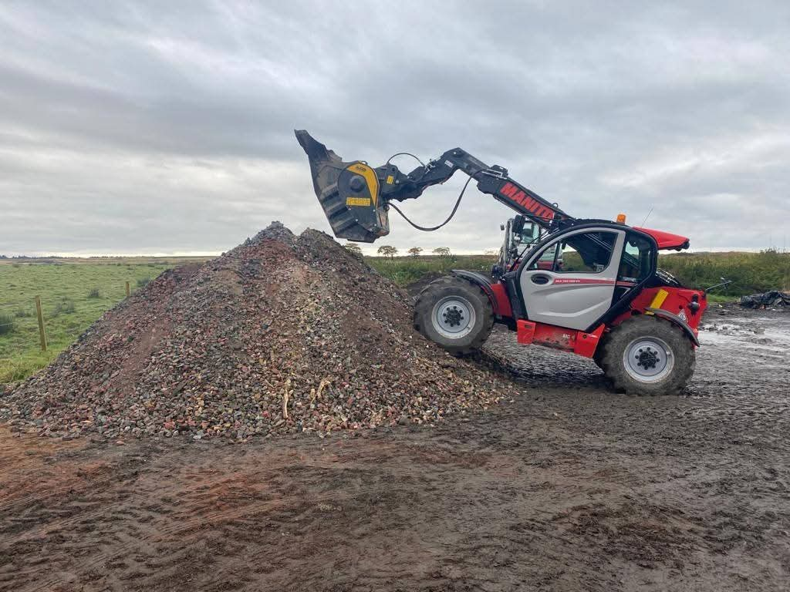
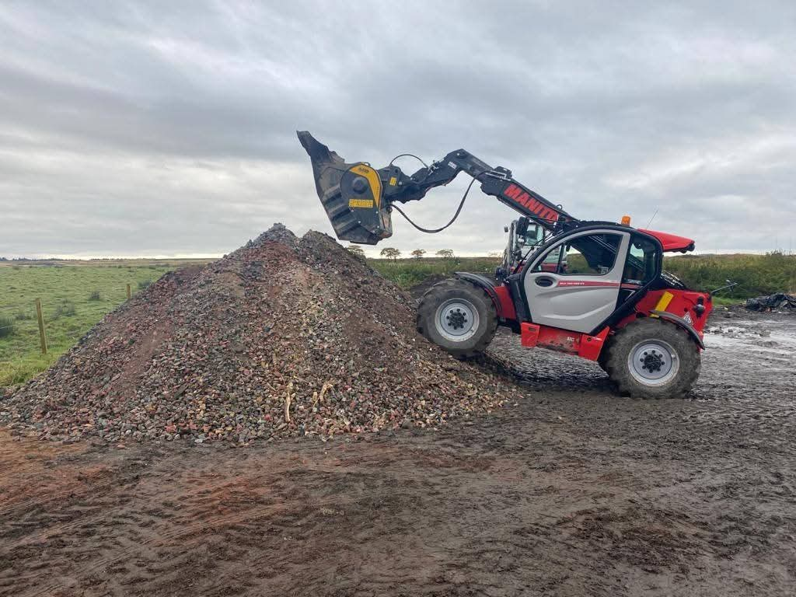

Expert Groundwork Services
Groundworks are the foundation of any successful construction project, and at Paton Construction Ltd, we understand the importance of getting it right. Based in West Lothian, we specialise in preparing the ground and below-ground areas to ensure your project starts on a solid footing.
Our Expertise
- New build groundworks packages
- Site preparation and assessment
- Foundation preparation
- Drainage solutions
- Complex development support

 
